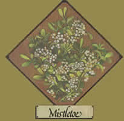
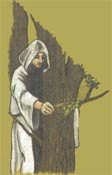

Lately, more and more people hove begun to understand just how limited - in both variety and nutritional value - our "modern" diets have become. This realization has sparked a new and widespread interest in the culinary and therapeutic uses of herbs . . . those plants which - although not well-known today - were, just one short generation ago, honored "guests" on the dinner tables and in the medicine chests of our grandparents' homes. In this regular feature, MOTHER examines the availability, cultivation, and benefits of our "forgotten" vegetable foods and remedies . . . and - we hope - helps prevent the loss of still another bit of ancestral lore.
At this time of the year, it's easy - in many parts of North America - to spot bright green balls of mistletoe lurking high among the bare branches of deciduous trees. You may well know that the parasitic plant's tendency to turn its limbs toward its host caused the ancients to see it as a protective, visible god. But have you wondered why a pause beneath this berry-bedecked holiday bough traditionally demands a kiss?
Well, when Shakespeare spoke of "the baleful mistletoe", he was alluding to the old Norse legend of how Balder, the god of peace, was stain by an arrow made from the plant. Other gods, however, restored the popular deity to life . . , put mistletoe under the auspices of Freya, the goddess of love . . . and ordained that whoever passed under it should receive a kiss to show that the plant had ceased to be an emblem of hate.
The fact that this "law" is valid only during the yuletide dates back to Celtic times, when - at the beginning of the year and during a particular phase of the moon - white-robed druids, led by visions, separated mistletoe growth from a sacred oak tree with a golden knife.
Mistletoe was also supposedly the same "golden bough" that, in Greek mythology, unlocked the door of Hades for Aeneas and the Sibyl to enter. And - during the Middle Ages and later - its branches were often hung from ceilings to ward off malevolent spirits. The plant was excluded from churches, however, probably because of a Breton legend which held that mistletoe was once a tree and that Christ's cross was made from its wood . . . after which the herbe de la croix was reduced to a parasite.
Actually, although too thick a growth can kill the host tree, Viscum album (European mistletoe) or Phoradendron flavescens (one of the species prevalent in the U.S., and also the state flower of Oklahoma) is only semiparasitic: Once attached, the seed sends its roots into the tree's bark to absorb water, but the herb is soon making its own food through the photosynthesis of its green leaves (which resemble rabbit ears). In fact, mistletoe is so successful at producing nutrients that it's been found to contain twice as much potash and five times as much phosphoric acid as the wood of its "foster parent".
If you rub some of the viscous white berries on a tree branch until they adhere, it's possible to grow mistletoe successfully. Normally, however, the plants are spread by seeds deposited in bird droppings. Indeed, the name mistletoe may derive from "mist" (the old Anglo-Saxon word for dung) and "tan" (meaning twig).
Hippocrates and Pliny recommended the herb for vertigo, epilepsy, and tremors. California Indians chewed the leaves for toothaches and used mistletoe tea to induce abortions. One-half teaspoonful of young, dried stems and leaves to a pint of boiling water is said to have been a traditional folk remedy for nervous disorders, convulsions, hysteria, kidney problems, neuralgia, heart disease, and sterility. (In addition, the herb is currently being tested in conjunction with cancer research.)
However, too large a dose of mistletoe (and the size of such a dose will vary with the species, the part of the plant used, and the person involved) produces an overall loss of sensation and a slow paralysis . . . it can even cause the heart to stop! Eating the berries will result in acute stomach and intestinal pains, diarrhea, weak pulse, mental disturbances, and collapse of the blood vessels. Death can occur within ten hours of ingestion.
So - by all means - hang your holiday love boughs to repel evil and attract kisses . . . but be sure to keep this potentially poisonous herb well away from small children and pets.
|
 A pause beneath the mistletoe demands a kiss |
Druids harvested mistletoe with golden knives |
 |